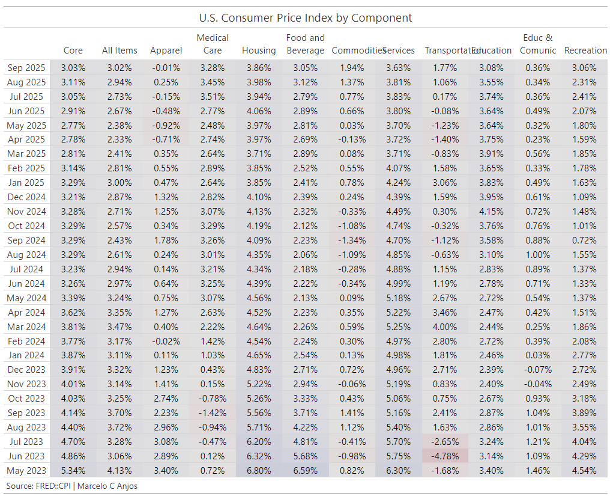

Macro economics
In this space, I share some details about research and studies that I have been working on.
2024 United States
Gross Domestic Product - GDP
Real gross domestic product increased at an annual rate of 2.8% in the second quarter of 2024. Drivers are consumer spending, private inventory investment, and nonresidential fixed investment.
Personal income increased $237.6 billion in the second quarter, compared with an increase of $396.8 billion in the first quarter.
Personal saving increased $186.3 billion or 3.6%. Personal saving rate as a percentage of disposable personal income was 3.5% in the second quarter, compared with 3.8% in the first quarter.
Personal consumption expenditures: % Change from Proceding Period was 2.3%, compared with 1.4% in the first quarter.
Gross private domestic investment: % Change from Proceding Period was 8.4% in the second quarter , compared with 4.4% in the first quarter.
Government consumption expenditures and gross investment: % Change from Proceding Period was 3.1% in the second quarter compared with 1.8% in the first quarter.
Source: Bureau of Economic Analysis
Inflation
The annual inflation rate for the United Stats was 2.9 for the 12 months ending July, compared to the previius rate increase of 3%, acording to U.S. Labor Departament data published on August 14, 2024.
The next inflation update is scheduled for release on September 11, 2024.

Source: Federal Reserve
Interest rates
- United States Central Bank Rate stands at 5.50%, following the most recent adjustment in july 2023.
- In Aug-23, 2024 Mr. Jerome Powell
The time has come for policy to adjust. The direction of travel is clear and the timing and pace of rate cuts will depend on incoming data the envolving outlook and the balance of risks. We will do everything we can to support a strong labor market as we made further progress toward price stability.
— Jerome Powell
Source: Federal Reserve
Labor
- One important indicator of labor market is the continuing claims that track the number of residents filing for ongoing unemployment benefits in a given week. The number of continuing claims for the week ending Aug 3, 2024 is 1.864 million. That is slightly more than the four-week moving average of 1.862 million. Meanwhile the number of initial claims for the week ending Aug. 3, 2024 is 233.000 lower than the four-week moving average of 240.750. The chart created by DiMartino (2024) shows more details about the indicator.

- Another importat labor market indicator is Aggregate hours worked. The chart below shows the average weekly hours of all employees, total private from FRED. The first thing you see when the economy is slowing down is a reduction in job openings. That is the first wave. The secong wave that you see is the number of hours worked. And that is a very important metric because when you’re cutting hours, the next step is to actually cut positions.

Source: Federal Reserve and U.S. Bureau of Labor Statistics and U.S. Departament of Labor
10-Year Treasury bonds
- United States Central Bank Rate stands at 5.50%, following the most recent adjustment in july 2023.
- The chart below shows the United States 10-Year Government Bond yield

Source: Yahoo finance, FRED
10Y3M curve
- The spread between United States 10-Year and 3-Months is -136.6 basis points(bp)

Overview 2Q24
Overall
Revenue’s cash flow is a challenge which has a short-term effect on supply chains, labor market and debt costs as some of them are backed by revenue. Generally, in these cycles, highly leveraged companies tend to file for bankruptcy which are important to observe, mainly due to volatility. The perception of high interest rates and monetary tightening make it difficult to pass on prices to the consumer, leading business to adjust their process searching for efficiency.
Temporary rise in unemployment rates but without abrupt movements. The job losses begin at the lowest rungs in terms of skills, educational attainment, income making capacity. This indicators are being closely monitored by FED officials and the reflection can be seen in Mr. Powell’s speeches.
Actions to improve the efficiency of costs(COGS) and operating expenses(SG&A) by companies.
Temporary increase in the cost of capital for privet debt.
Supply chain reorganization.
Increase of risk of plain vanilla recession
Agroindustry: dairy sector adjustments, machines (e.g. John Deer).
- here
Auto industry: sales, operation results, investments, and projections
- here

Transportation: carrier population, tender rejections, volume, capacity
There was overcapacity in carrier population during the period from 2020 to 2023 due to demand that has been inconsistent over time and is currently undergoing adjustments. However, capacity still presents high values in relation to valumes and demand, pressuring agents to adjust their operations in search for efficiency gains. Some of those carriers are contracting reducing their fleets sizes in order to move forward. On the other side the carriers population are reduced in 32.500 from december of 2022 to june of 2024.
Tender rejections are currently in 4.5%, and diesel prices are $3.81 per gallon on average.
Dry van in spot market currently $1.96 per mile 0.2% YoY and -11.5% over five years. Overcapacity more concentrated in Atlanta, GA.
Reefer in spot market currently $2.30 per mile -1% YoY and -9% over five years.
Flat bed in spot market currently $2.34 per mile -1% YoY and -7% over five years.
Technology: growth, AI, balance sheet adjustments, labor force
- here
Construction:index, prices, new home sales, labor force, permits, projections
- here
Manufacturing:sector, investments, construction site, infraestructute, training, labor force
- here
Source: CNBC, The week in Agribusiness, The Autoline Daily, Bloomberg, Trucking Made Successful,
References
DiMartino, Danielle. 2024. “You Need to Be Prepared BEFORE the Fed Starts Cutting Interest Rates.” https://www.youtube.com/watch?v=0gdvr6Ytn4M&ab_channel=ITMTRADING%2CINC.